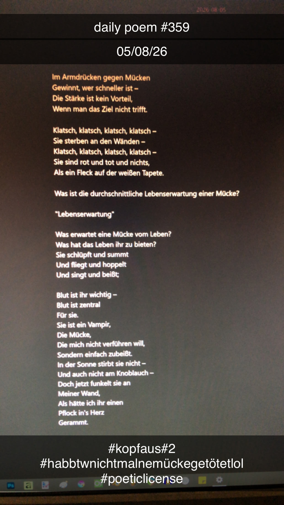

Mücken
Im Armdrücken gegen Mücken
Gewinnt, wer schneller ist –
Die Stärke ist kein Vorteil,
Wenn man das Ziel nicht trifft.
Klatsch, klatsch, klatsch, klatsch –
Sie sterben an den Wänden –
Klatsch, klatsch, klatsch, klatsch –
Sie sind rot und tot und nichts,
Als ein Fleck auf der weißen Tapete.
Was ist die durchschnittliche Lebenserwartung einer Mücke?
"Lebenserwartung"
Was erwartet eine Mücke vom Leben?
Was hat das Leben ihr zu bieten?
Sie schlüpft und summt
Und fliegt und hoppelt
Und singt und beißt;
Blut ist ihr wichtig –
Blut ist zentral
Für sie.
Sie ist ein Vampir,
Die Mücke,
Die mich nicht verführen will,
Sondern einfach zubeißt.
In der Sonne stirbt sie nicht –
Und auch nicht am Knoblauch –
Doch jetzt funkelt sie an
Meiner Wand,
Als hätte ich ihr einen
Pflock in's Herz
Gerammt.
